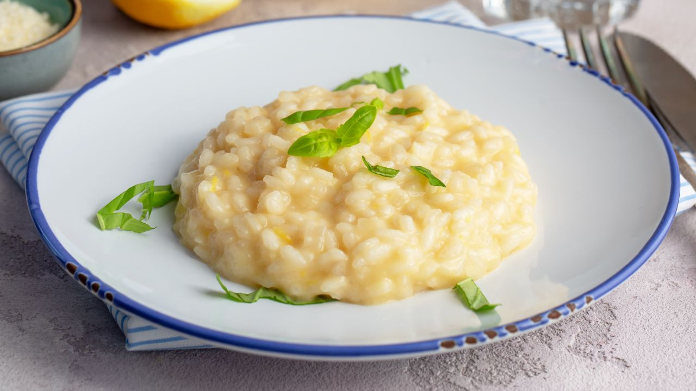
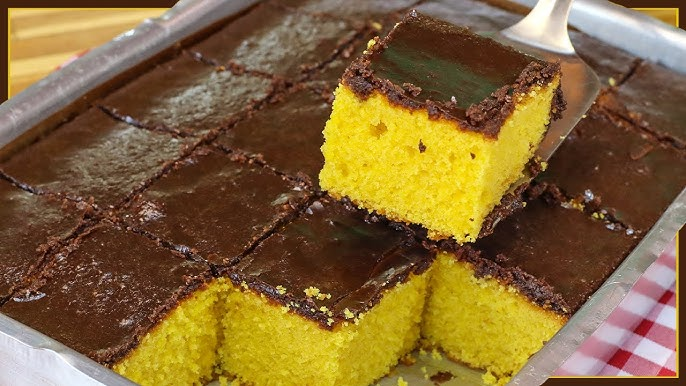
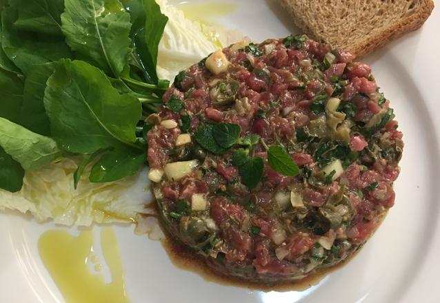

Risoto 4 Queijos
Descubra como preparar um delicioso risoto quatro queijos, perfeito para impressionar seus convidados.
Ingredientes:
- 1 xícara de arroz arbóreo
- 1 colher (sopa) de manteiga
- 1 dente de alho picado
- 1 litro de água quente com temperos a gosto
- 100g de queijo parmesão em cubos
- 100g de queijo gorgonzola em cubos
- 100g de queijo mussarela em cubos
- 100g de queijo provolone em cubos
- 2 colheres (sopa) de requeijão cremoso
- Sal a gosto
Modo de Preparo:
- Em uma panela, derreta a manteiga e refogue o alho até dourar.
- Adicione o arroz e frite por cerca de 5 minutos.
- Acrescente uma concha da água quente com temperos e mexa até o líquido evaporar.
- Repita o processo, adicionando a água aos poucos e mexendo sempre, por aproximadamente 40 minutos, até o arroz ficar al dente.
- Adicione os queijos picados e o requeijão, mexendo até que tudo esteja derretido e incorporado.
- Ajuste o sal, se necessário, e sirva imediatamente.
Bolo de Cenoura com Cobertura de Chocolate
Um clássico da confeitaria brasileira, esse bolo de cenoura é fofinho e coberto com uma deliciosa calda de chocolate.
Ingredientes:
Massa:
- 3 cenouras médias raladas
- 4 ovos
- 1/2 xícara (chá) de óleo
- 2 xícaras (chá) de açúcar
- 2 e 1/2 xícaras (chá) de farinha de trigo
- 1 colher (sopa) de fermento em pó
Cobertura:
- 1 colher (sopa) de manteiga
- 3 colheres (sopa) de chocolate em pó
- 1 xícara (chá) de açúcar
- 1 xícara (chá) de leite
Modo de Preparo:
- No liquidificador, bata as cenouras, os ovos e o óleo até obter uma mistura homogênea.
- Adicione o açúcar e bata por mais 5 minutos.
- Em uma tigela, misture a farinha de trigo e o fermento.
- Incorpore a mistura do liquidificador aos ingredientes secos, mexendo até formar uma massa uniforme.
- Despeje a massa em uma forma untada e enfarinhada.
- Asse em forno preaquecido a 180°C por aproximadamente 40 minutos.
- Para a cobertura, misture todos os ingredientes em uma panela e leve ao fogo, mexendo até obter uma calda cremosa.
- Despeje a cobertura sobre o bolo ainda quente.
Steak Tartare
Um prato clássico da culinária francesa, o steak tartare é feito com carne crua bem temperada e servido geralmente como entrada. Elegante, refrescante e cheio de sabor!
Ingredientes:
- 300g de filé mignon moído ou picado bem fino
- 1 gema de ovo
- 1 colher (chá) de mostarda Dijon
- 1 colher (sopa) de molho inglês
- 1 colher (sopa) de alcaparras picadas
- 1 colher (sopa) de cebola roxa bem picada
- 1 colher (sopa) de pepino em conserva picado
- Sal e pimenta-do-reino a gosto
- Azeite de oliva a gosto
- Torradas ou pão para acompanhar
Modo de Preparo:
- Em uma tigela, misture bem a carne com a cebola, o pepino, as alcaparras e a gema.
- Adicione a mostarda, o molho inglês e misture delicadamente.
- Tempere com sal, pimenta-do-reino e azeite a gosto.
- Modele no prato (pode usar um aro ou molde redondo).
- Sirva imediatamente, acompanhado de torradas ou pão fresco.